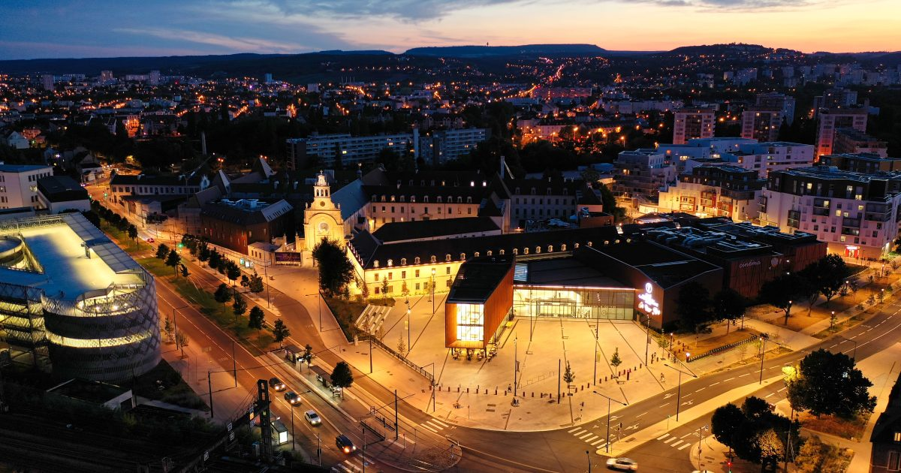
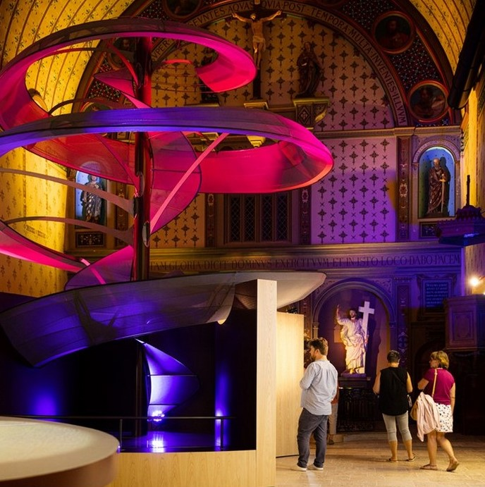

Avant de partir
Pourquoi la moutarde, et ce qui est réellement protégé
Le terme désigne une méthode — des graines broyées au verjus ou au vin blanc — et n’importe qui, n’importe où, peut légalement l’employer. C’est exactement pour cela que les boutiques dijonnaises sont plus intéressantes qu’elles n’en ont l’air : ce sont celles qui le font encore ici.
Elle exige des graines cultivées en Bourgogne et du vin blanc bourguignon. Pendant des décennies, la quasi-totalité de la graine de moutarde venait du Canada ; les producteurs locaux reconstituent les surfaces. Le label IGP est la seule chose dans tout cela qui ait une adresse.
— fondée à Beaune en 1840, elle broie toujours à la meule de pierre. L’usine ne figure pas au programme cette fois : c’est la maison qui vient à vous, par l’atelier du vendredi qu’elle anime et par sa Boutique-Atelier de la rue de la Chouette, bar de dégustation compris.
La graine de moutarde se récolte en juillet : il n’y a donc pas de champs de moutarde en septembre. Et 2026 a été un millésime exceptionnellement précoce — l’essentiel des vendanges de Côte-d’Or s’est achevé autour du 20 août — la vendange sera donc terminée. La compensation : à la mi-septembre, les caves sont détendues et contentes de vous voir, plutôt que débordées.
Premier jour
Vendredi 11 septembre — Dijon
Aller — Lausanne 12:30, Dijon-Ville 14:23. Retour — Dijon-Ville 13:34 dimanche. Pas de voiture du week-end : rien à garer, aucun parking à réserver, et personne n’a besoin de rester sobre.
De la gare à la Maison Philippe le Bon, dix minutes à pied. Le centre est presque entièrement piétonnier et tout ce qui suit tient dans un rayon d’un kilomètre — sauf Beaune, à 19 minutes de TER.
-
14:23
Arrivée à Dijon-Ville, puis l’hôtel
- Demander des chambres supérieures
C’est le train qui cale l’après-midi. Le temps de poser les sacs, il est 14:45 : c’est exactement pour cela que l’atelier moutarde est pris au dernier créneau du jour plutôt qu’à celui de 14:45, et que la chouette passe avant.
Demandez des chambres supérieures : les standard sont petites. Et le dîner de ce soir se prend en bas — La Closerie est le restaurant de la maison.


Maison Philippe le Bon — une chambre à poutres, et la terrasse du jardin. -
15:00
Le parcours de la Chouette, version moutarde
22 chouettes de bronze incrustées dans le pavé, qui faufilent la vieille ville. Le livret se prend à l’office de tourisme, 11 rue des Forges, à cinq minutes de l’hôtel. Quatre-vingt-dix minutes sans se presser, et le parcours passe devant les deux boutiques de moutarde.
L’atelier de 16:30 coupe la boucle en deux, et c’est le bon ordre : les deux boutiques d’abord, tant qu’elles sont ouvertes, les chouettes qui restent après — vous aurez de 17:30 à 19:45 sans rien à faire d’autre.
-
Fallot Boutique-Atelier 16 rue de la Chouette
Littéralement sur le parcours ; bar de dégustation, broyage à la meule visible certains jours, moutardes au meursault. La moutarderie de Beaune n’étant plus au programme, c’est ici que Fallot s’achète. -
Maille 32 rue de la Liberté
La moutarde à la pompe, tirée fraîche dans un pot de grès. La moutarde fraîche n’a rien à voir avec celle en bocal : plus vive, plus volatile, et elle s’éteint en quelques semaines. Achetez petit, mangez vite.
Seule fenêtre Maille est fermé le dimanche et vous êtes à Beaune tout le samedi — c’est votre seul créneau.La main gauche sur la chouette de Notre-Dame, faites un vœu.
-
Fallot Boutique-Atelier 16 rue de la Chouette
-
16:30
Fabriquez votre moutarde ★
- 12 € par personne
- 16:30–17:30
- 4 places, plein tarif
- Réservé · dossier 10433287
Animé avec Fallot. On broie, on écrase, on assaisonne et on mélange ; on repart avec son propre pot et un bon pour un cadeau à la boutique Fallot — demandez en réservant où il se retire, la Boutique-Atelier de la rue de la Chouette est à cinq minutes.
C’est réservé : le 11/09/2026 de 16h30 à 17h30, quatre places plein tarif, dossier 10433287 — gardez la référence, elle est demandée sur place. Le créneau de 14:45 n’aurait pas tenu, sacs à la main, avec un train à 14:23.
Présentez-vous cinq minutes avant, donc 16:25, au 86 rue Monge ; un conseiller en séjour vient ouvrir la porte au début de la prestation. Animé en français et en anglais. Pas d’animaux, pour raisons sanitaires. La prestation n’est ni échangeable ni remboursable — Office de tourisme, +33 3 80 44 11 44, info@otdijon.com.
C’est l’activité qui accueille le moins de monde de tout le week-end — et c’est le « fabriquer » de marcher, pédaler, goûter, manger, fabriquer, voir.
-
19:45
Dîner — La Closerie
- Signature Bourguignonne 45 €
- Menu La Closerie 75 €
- Fermé dim. et lun.
- Réservation
C’est le restaurant de la Maison Philippe le Bon : le dîner se prend au rez-de-chaussée, et la terrasse-jardin fait l’apéritif s’il fait doux. Salle refaite, cuisine bistronomique, carte courte qui suit les saisons et qui reprend les classiques bourguignons — jambon persillé, poulet Gaston Gérard — au lieu de les réciter.
Le Gaston Gérard est la pièce qui referme la journée : du poulet à la moutarde, vin blanc, crème et comté, inventé à Dijon et portant le nom d’un maire de la ville. Deux menus le soir, 45 € et 75 € (quatre services, deux verres de bourgogne), ou à la carte ; 11,5/20 au Gault&Millau.
À demander en réservant La carte tourne : demandez si le Gaston Gérard sera de la partie ce soir-là. Sinon vous le saurez avant d’avoir marché toute la journée, et il reste le jambon persillé. Réservez de toute façon — c’est aussi la salle des clients de l’hôtel.
Deuxième jour
Samedi 12 septembre — Beaune, en train et à vélo
-
08:15
Les Halles de Dijon
- Mar., jeu., ven., sam. · le matin
Halle métallique à charpente Eiffel, ouverte les mardi, jeudi, vendredi et samedi le matin seulement, et le samedi est le grand jour. Quarante minutes suffisent : époisses, jambon persillé, gougères, et un pot d’IGP Moutarde de Bourgogne à goûter face aux Fallot et Maille de la veille.
-
09:00
Rejoindre Dijon-Ville
Dix minutes à pied jusqu’à Dijon-Ville, puis le train pour Beaune.
-
09:30
Hôtel-Dieu, Hospices de Beaune
- 12,50 €
- Tous les jours 09:00–19:30
- Compter 1 h 15
Le toit de tuiles vernissées polychromes, la grande salle des Pôvres, le Jugement dernier de van der Weyden. Allez-y maintenant — à onze heures, c’est la queue.
-
10:50
Le marché du samedi à Beaune
Une boucle rapide. Achetez de quoi manger sur un muret de pierre entre deux villages.
-
11:30
Récupérer les vélos — Bourgogne Randonnées
Idéalement placé sur la route de la gare. Quatre vélos, et prenez les électriques.
-
11:45
La Voie des Vignes ★
Voir le bloc ci-dessous.
La Voie des Vignes
Plate, sur de petites routes et des chemins de vigne, de Beaune à Santenay par Pommard, Volnay, Meursault, Puligny-Montrachet et Chassagne-Montrachet — 23 km à l’aller sur la carte officielle du Pays Beaunois. C’est, indépassablement, une piste cyclable au milieu des terres agricoles les plus chères du monde.
Les cyclistes partagent ces chemins avec les vignerons qui y travaillent : 20 km/h maximum, priorité à eux, remportez vos déchets.
- Beaune
- 3,6 kmPommard
- 1,5 kmVolnay
- 3,5 kmMeursault
- 4,6 kmPuligny-MontrachetDemi-tour
- 3,5 kmChassagne-Montrachet
- …Santenay
Volnay 5,1 km · Meursault 8,6 km · Puligny 13,2 km · Santenay 23 km

Carte cyclable officielle du Pays Beaunois — la ligne verte est la Voie des Vignes. Cliquez la carte pour l’ouvrir en grand dans un nouvel onglet. 
Le chemin lui-même, entre les murets. -
13:00
Déjeuner — Le Cellier Volnaysien
- à 5 km
- Fermé mar. et mer.
Salles voûtées en cave et tables dehors. Le jambon persillé et les œufs en meurette sont les signatures, et la cave attenante vend du bourgogne à des prix qui n’ont pas remarqué les touristes. Réservez.

Le Cellier Volnaysien — la salle voûtée en cave. -
14:30
Puis Meursault et Puligny, et demi-tour
Environ 26 km aller-retour, ce qui est la distance honnête pour le temps disponible. Santenay et retour fait 46 km et ne rentrera pas aujourd’hui.
-
16:10
Rendre les vélos
-
16:40
Retour à Dijon
Les vélos rendus, la gare est au bout de l’avenue. Une heure et demie à l’hôtel avant de ressortir dîner, ce qui, après vingt-six kilomètres, n’est pas du luxe.
-
19:30
Dîner — Le Pré aux Clercs
- Plat du jour 16 € · 2 services 25 € · 3 services 28 €
- Sam. 12:00–14:15 et 19:00–21:30
- Ouvert 7 j/7
- Réservation
Sous les arcades de la place de la Libération, à cinq minutes de l’hôtel : la plus belle place de la ville, et la table qui la tient. Tout est fait maison, et la cave annonce 450 références.
Surtout, la carte affiche cromesquis d’andouillette, sabayon à la moutarde — l’assiette la plus dans le thème de tout Dijon, et la raison pour laquelle le dîner du samedi se fait ici plutôt qu’à Beaune. C’était le déjeuner de dimanche ; le train de 13:34 l’a rendu impossible, alors il remonte d’un jour.
Si vous préférez un bistrot DZ’envies, 12 rue Odebert, +33 3 80 50 09 26 — contre les Halles que vous aurez faites le matin, cité au guide Michelin, menu du samedi autour de 34 €. Jambon persillé, œufs en meurette, joue de bœuf bourguignonne. Fermé dimanche et lundi, donc samedi est son seul créneau à lui aussi.
Troisième jour
Dimanche 13 septembre — la Cité, et le retour
12 Parvis de l’UNESCO — à un kilomètre du vieux centre, sur le site de l’ancien hôpital. Vingt minutes à pied depuis l’hôtel, du même côté de la ville que la gare. Le train de 13:34 est le point fixe de la journée : tout se cale en marche arrière depuis lui.
-
09:30
Libérer la chambre, laisser les sacs
Demandez à la réception de garder les bagages. La Cité est du même côté de la ville : vous repasserez devant l’hôtel en allant à la gare, et vous marcherez les mains vides toute la matinée.
La marche dans les vignes tombe cette fois. La Route des Grands Crus commence pourtant au seuil de Dijon, à Chenôve et à Marsannay-la-Côte — mais elle demande une matinée entière, que le train de 13:34 ne laisse pas. Ce sera pour la prochaine ; samedi vous aura donné des roues plutôt que des chaussures.
-
10:00
La Cité Internationale de la Gastronomie et du Vin
Trois choses à savoir, parce que le site est plus vaste et plus mélangé qu’il n’en a l’air. Vous avez deux heures et demie : de quoi faire les deux expositions et la chapelle, à condition de ne pas commencer par la Cave.

Le site au crépuscule — l’ancien hôpital, sa chapelle et les bâtiments neufs, sur le parvis. - Les expositions permanentes sont gratuites — 1 750 m² entre À la Table des Français et Le 1204, centre d’interprétation des 800 ans d’hôpital du site.
- La Chapelle des Climats — une chapelle de 1504, devenue une projection immersive sur les climats de Bourgogne — se visite librement, mais la visite guidée avec dégustation à 9 € est la meilleure version. C’est votre vin du dimanche, et une très bonne introduction à la raison pour laquelle un muret de pierre sèche change le prix d’une parcelle.
- Le Village Gastronomique est gratuit et ouvert le dimanche de 10:00 à 19:00 — neuf boutiques d’artisans, dont fromage, charcuterie, chocolat et moutarde, où l’on achète ce que l’on veut, où on le fait cuire à la plancha et où l’on mange à des tables communes. À côté, la Cave de la Cité sert 3 000 références, dont 250 au verre.

La chapelle et sa scénographie lumineuse. -
11:45
Déjeuner au Village Gastronomique
- Dim. 10:00–19:00
- Sans réservation
Sur place, et c’est le seul déjeuner qui tienne dans ce qui reste de la matinée : on achète chez les neuf artisans, on fait cuire à la plancha, on mange aux tables communes, on s’en va quand on veut. La Table des Climats et Le Comptoir de la Cité sont là aussi, mais un service assis un dimanche midi avec un train à 13:34 se joue à la minute.
Un dernier verre à la Cave de la Cité si l’heure le permet — 3 000 références, 250 au verre.
-
12:30
Reprendre les sacs, puis la gare
Quittez le parvis à 12:30 et vous êtes sur le quai vers 13:00. Départ 13:34 pour Lausanne. C’est la seule heure du week-end qui ne se négocie pas.
Les horaires dominicaux du Village Gastronomique sont confirmés (10:00–19:00) mais ceux des salles d’exposition ne le sont pas — le site de la Cité bloque les accès automatisés. Appelez le +33 3 73 27 54 20 pour vérifier les expositions, et pour caler la dégustation de la Chapelle des Climats sur un créneau avant midi : après, le train ne le permet plus.
Leur billetterie en ligne annonce aussi environ 16 ateliers et 7 dégustations de l’École des Vins de Bourgogne — à regarder pour un créneau du dimanche, même si la plupart sont en français uniquement.
Le retour
Carnet — ce qui rentre dans le sac
- Fallot, à la Boutique-Atelier du 16 rue de la Chouette, vendredi — la moutarde au meursault, le pain d’épices, le cassis. La moutarderie de Beaune ne figurant plus au programme, tout s’achète à Dijon.
- La moutarde à la pompe de Maille dans son pot de grès — vendredi seulement, et à manger dans le mois.
- Tout ce qui porte la mention IGP Moutarde de Bourgogne — des graines réellement cultivées ici, du vin blanc bourguignon dans le mélange.
- Des marchés et du Village : jambon persillé, époisses (à sceller dans quelque chose d’implacable — vous rentrez dans une voiture de train, fenêtres fermées), crème de cassis.